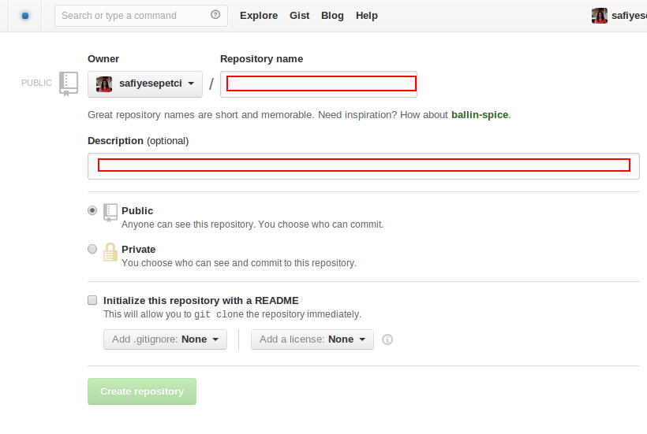

Github'a nasıl dosya yollanir?
Github versiyon kontrol sistemleri için bir uzak depodur. Hızlı ve güvenli oluşu, kapsamlı raporlama yapısı ve çoklu çalışma kolaylığı ile birçok yazılımcının vazgeçilmezi olmuştur. Peki github nasıl kullanılır?
Şimdi github'da hesabınızı aldıktan sonra yeni bir repository (depo) oluşturmayı ve oluşturduğumuz repository'ye dosya yollamayı anlatacağım.
İlk olarak github hesabımızda repository/new yada create a new repo'ya tıklayarak repomuzu oluşturuyoruz.

Dizinimizi oluşturduktan sonra sıra var olan dosyalarımızı uzak depoya yollamaya geliyor.
Yukarıdaki adımları console yada terminalimizden sırasıyla uyguladığımızda ilk olarak
touch README.md
README.md adında bir dosya oluşturuyor ve
git init
komutuyla oluşturduğumuz dosyayı github'ın anlayacağı dile çeviriyoruz.
git commit -m "first commit"
bu satır dosyamızı staging' e taşıyor ve değişiklik kayıtları için commit mesajını bu satırda yazıyoruz.
git remote add origin git@github.com:safiyesepetci/deneme.git
bu satırda uzak depomuzun yolunu yazıyoruz.
git push -u origin master
bu son satırımızda dizimizi uzak depoya taşıyor.
comments powered by Disqus